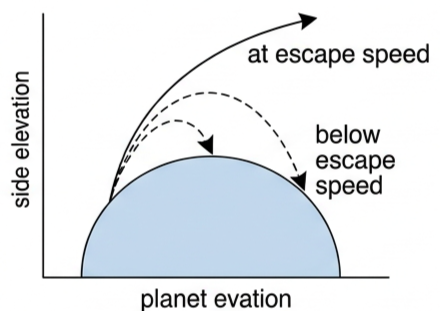
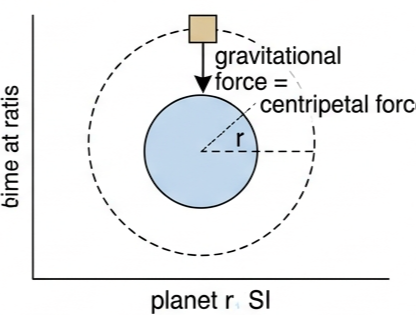
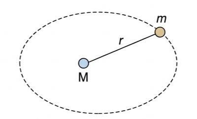
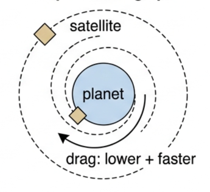
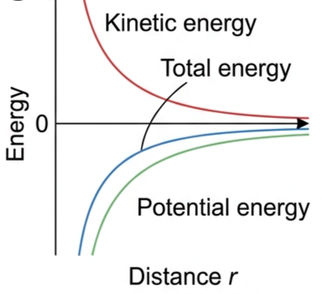
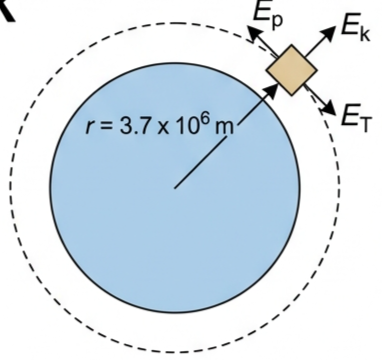

Part of D.1 Gravitational Fields · Unit D — IB Physics 2023
6 Lesson 6 of 6 · D.1 Gravitational Fields
Satellites: speeds and energies
Two speeds decide everything about a satellite's fate: the orbital speed that keeps it circling, and the escape speed that lets it leave forever. Between them sits the energy budget that tells you what it costs to raise, lower, or lose an orbit.
🚀 Hook – throwing something so hard it never comes back
Throw a ball straight up and it always falls back down. Throw it faster, and it still falls back down — just from higher up. But there is one speed at which the ball stops falling back at all: it keeps moving away from Earth forever, slowing down but never quite stopping. That single critical speed is the escape speed, and every planet and moon has its own value.

Fig 1 — Below escape speed, a projectile's path curves back to Earth. At exactly the escape speed, it keeps receding forever, arriving at infinity with zero speed.
💡 Diagnostic question — does escape speed depend on the mass of the object being launched? No. Both the kinetic energy needed and the kinetic energy available scale with mass \(m\) in exactly the same way, so \(m\) cancels out of the equation — a pebble and a spacecraft need the same escape speed from the same point.
🌌 Escape speed – enough kinetic energy to reach infinity
For the sake of simplicity, this whole lesson assumes the planet is not rotating. In general, the kinetic energy given to a launched object is transferred to gravitational potential energy, and some is dissipated by air resistance. Assuming no air resistance, the escape speed \(v_{\text{esc}}\) of a mass \(m\) is the minimum speed needed to reach an infinite distance from a planet of mass \(M\):
Kinetic energy needed = change in gravitational potential energy to infinity
$$\tfrac{1}{2}mv_{\text{esc}}^{2} = 0-\left(-\frac{GMm}{r}\right)$$
Fig 2 — All of the initial kinetic energy is used to raise the gravitational potential energy from \(-GMm/r\) up to zero at infinity.
📖 Escape speed — the minimum theoretical speed an object must be given to move to an infinite distance away from a planet (or moon, or star). This speed is the same regardless of the direction of travel, and assumes no other significant gravitational field (such as a moon) is nearby.
The equation assumes the mass starts with zero kinetic energy. A satellite already in a steady orbit has some kinetic energy to begin with, so it needs less extra energy to escape — see Changing orbits below.
🔗 Linking question — how is the amount of fuel required to launch rockets into space determined by considering energy?
🛰️ Orbital speed – from Kepler's third law
A satellite needs the correct orbital speed to maintain a circular orbit. From Kepler's third law:
$$\frac{r^{3}}{T^{2}}=\frac{GM}{4\pi^{2}}$$
Replacing \(T\) with \(2\pi r/v\) gives \(\dfrac{r^{3}v^{2}}{4\pi^{2}r^{2}}=\dfrac{GM}{4\pi^{2}}\), which simplifies to:
Orbital speed
$$v_{\text{orbital}}=\sqrt{\frac{GM}{r}}$$

Fig 3 — Gravitational attraction provides exactly the centripetal force needed for a circular orbit at radius \(r\); that condition fixes \(v_{\text{orbital}}\).
📖 Orbital speed — for a satellite in a circular orbit, its speed must have the correct value for the chosen radius: \(v_{\text{orbital}}=\sqrt{GM/r}\).
⚡ Energy of an orbiting satellite
Gravitational potential energy of a satellite of mass \(m\) at distance \(r\) from a planet of mass \(M\):
$$E_{\text{p}}=-G\frac{Mm}{r}$$
Total energy of an orbiting satellite is \(E_{\text{T}}=E_{\text{k}}+E_{\text{p}}=\tfrac12mv_{\text{orbital}}^{2}+\left(-\dfrac{GMm}{r}\right)\). Since \(v_{\text{orbital}}^{2}=GM/r\):
Kinetic energy in a circular orbit
$$E_{\text{k}}=\frac{1}{2}\frac{GMm}{r}$$
Total energy in a circular orbit
$$E_{\text{T}}=-\frac{1}{2}\frac{GMm}{r}$$
Fig 4 — A satellite in a circular orbit always has negative \(E_{\text{p}}\) and negative \(E_{\text{T}}\): it does not have enough energy to escape the field.
Putting a satellite into orbit needs energy to: increase the satellite's gravitational PE; increase the PE of the launch vehicle and fuel; give the satellite its orbital KE; overcome friction; and allow for thermal dissipation. The gravitational and kinetic energy the satellite ends up with is only a small percentage of the total energy transferred — launching a satellite is not an efficient process.
📈 Graph mastery – energy and speed against orbital radius
Graph type
Axes (X, Y)
Shape
What to read
Kinetic energy vs distance
Distance \(r\) · \(E_{\text{k}}\) / J
Always positive; falls and flattens toward zero as \(r\) increases
\(E_{\text{k}}=\tfrac12GMm/r\) — never reaches zero, never negative
Potential and total energy vs distance
Distance \(r\) · Energy / J
Both negative; both curve upward toward (never reaching) zero as \(r\) increases
\(E_{\text{T}}\) sits exactly midway between the \(E_{\text{p}}\) and \(E_{\text{k}}\) curves at every \(r\), since \(E_{\text{T}}=\tfrac12E_{\text{p}}=-E_{\text{k}}\)
Orbital speed vs radius
Radius \(r\) · \(v_{\text{orbital}}\) / m s⁻¹
Decreasing curve, \(v\propto 1/\sqrt{r}\)
Higher orbits need lower orbital speed, never zero

Fig 5 — Kinetic energy (positive), total energy and potential energy (both negative) plotted against distance; total energy always lies midway between the other two.

Fig 6 — Orbital speed falls off as \(1/\sqrt{r}\): satellites in low orbits move fastest.
✍️ Worked example D1.14 – escape speed from Earth's surface
(a) Calculate the escape speed from the Earth's surface. (b) Outline why all masses have the same escape speed.
1
Identify: use \(v_{\text{esc}}=\sqrt{2GM/r}\) with \(r\) = the Earth's radius, launching from the surface.
Answer: \(v_{\text{esc}}=1.1\times10^{4}\ \text{m s}^{-1}\) (about 11 km s⁻¹). (b) Doubling the mass needs double the gravitational PE gained, so it needs double the kinetic energy — which it has with double the mass at the same speed, since \(E_{\text{k}}\propto m\).

Fig 7 — Escape speed measured from the Earth's surface, radius \(r=6.4\times10^{6}\) m.
✍️ Worked example D1.15 – orbital speed above the Moon
What speed is required for a satellite to maintain a circular orbit 100 km above the Moon's surface? (Mass of Moon \(=7.35\times10^{22}\) kg, radius of Moon = 1737 km)
1
Identify: use \(v_{\text{orbital}}=\sqrt{GM/r}\), where \(r\) is measured from the Moon's centre, not its surface.
Fig 8 — Orbit 100 km above the Moon's surface; \(r\) is measured from the Moon's centre, giving \(r=1.837\times10^{6}\) m.
✍️ Worked example D1.16 – the Moon's orbital period
The average distance between the centre of the Moon and the centre of the Earth is \(3.84\times10^{8}\) m. The Earth has a mass of \(6.0\times10^{24}\) kg. Determine a value for the time for each orbit of the Moon around the Earth (assuming a circular path).
1
Identify: use Kepler's third law, \(r^{3}/T^{2}=GM/4\pi^{2}\), with \(M\) the Earth's mass.
2
Data: \(r=3.84\times10^{8}\) m, \(M_{\text{Earth}}=6.0\times10^{24}\) kg.
Fig 9 — The Moon's orbit around the Earth, \(r=3.84\times10^{8}\) m centre-to-centre.
✍️ Worked example D1.17 – energies of a satellite orbiting Mars
A 500 kg satellite is orbiting at a height of 300 km above the surface of Mars. Mass of Mars \(=6.4\times10^{23}\) kg. Radius of Mars \(=3.4\times10^{6}\) m. Determine the satellite's (a) gravitational potential energy (b) kinetic energy (c) total energy.
1
Identify: \(r=3.4\times10^{6}+3.0\times10^{5}=3.7\times10^{6}\) m; use \(E_{\text{p}}=-GMm/r\), \(E_{\text{k}}=\tfrac12GMm/r\), \(E_{\text{T}}=-\tfrac12GMm/r\).
2
Data: \(M_{\text{Mars}}=6.4\times10^{23}\) kg, \(m=500\) kg, \(r=3.7\times10^{6}\) m.
Fig 10 — 500 kg satellite, 300 km above Mars, \(r=3.7\times10^{6}\) m from Mars's centre.
📊 Changing orbits — moving this satellite to an orbit 200 km higher gives \(E_{\text{p}}=-5.93\times10^{9}\ \text{J}\) (up ≈\(0.35\times10^{9}\) J), \(E_{\text{k}}=+2.96\times10^{9}\ \text{J}\) (down ≈\(0.17\times10^{9}\) J), \(E_{\text{T}}=-2.96\times10^{9}\ \text{J}\) (up ≈\(0.17\times10^{9}\) J). Less kinetic energy (slower orbital speed needed) but a bigger gain in potential energy — overall, energy must be supplied to raise an orbit.
🌍 Real-world: atmospheric drag and orbital decay
Satellites in low orbits may experience very slight viscous drag from the outer atmosphere. This dissipates kinetic energy as thermal energy — but the satellite does not simply slow down. As it loses height, it drops into a lower orbit where the required orbital speed is greater. The loss of potential energy outweighs the loss to friction, so overall the satellite's speed increases even as it loses total energy, and increasing drag at lower altitude dissipates even more thermal energy. Left uncontrolled, it spirals towards Earth, burns up and disintegrates.

Fig 11 — Drag removes total energy at each pass, but the satellite ends up lower, faster, and hotter — not slower.
✓ Examiner tip: never write that drag "just slows the satellite down". State that drag removes total energy, the orbit radius decreases, and \(v_{\text{orbital}}=\sqrt{GM/r}\) is then larger at the new, smaller \(r\).
🔗 Linking question — how can air resistance be used to alter the motion of a satellite orbiting Earth? (Links to Topic A.2.)
🚀 HL extension – the energy cost of escaping an existing orbit
A satellite already circling at radius \(r\) has orbital kinetic energy \(E_{\text{k}}=\tfrac12GMm/r\). To escape, its total energy must rise from \(-\tfrac12GMm/r\) to zero, so:
This extra kinetic energy needed is exactly equal to the satellite's existing orbital kinetic energy — it must effectively double its kinetic energy to break free.
Challenge: show that \(v_{\text{esc}}=\sqrt{2}\,v_{\text{orbital}}\) at the same radius \(r\). Answer: \(v_{\text{esc}}=\sqrt{2GM/r}=\sqrt{2}\sqrt{GM/r}=\sqrt{2}\,v_{\text{orbital}}\) — a satellite must speed up by a factor of \(\sqrt{2}\) (about 41%) to escape from its own orbit.
⚠️ Trap corner – common mistakes
Misconception
Correct view
Escape speed depends on the direction you launch in
With no air resistance, \(v_{\text{esc}}\) is exactly the same in every direction — only the distance \(r\) to the centre matters
A satellite already in orbit needs the full \(v_{\text{esc}}\) to escape
It already has orbital kinetic energy; the extra kinetic energy needed equals \(\tfrac12GMm/r\), i.e. exactly its existing orbital \(E_{\text{k}}\)
Air resistance always slows a satellite down
Drag removes total energy, but as the satellite drops to a lower orbit its required orbital speed increases — it ends up moving faster, not slower
Escape speed and orbital speed are the same thing
\(v_{\text{esc}}=\sqrt{2}\,v_{\text{orbital}}\) at the same \(r\) — escape speed is always the larger of the two
⚠️ Most common slip: using the satellite's own mass \(m\) in place of the planet's mass \(M\) inside \(v_{\text{orbital}}=\sqrt{GM/r}\) or Kepler's third law — \(M\) is always the mass of the body being orbited, and the satellite's mass \(m\) cancels out of both speed equations entirely.
1. Which expression gives the escape speed from a planet of mass \(M\) at distance \(r\) from its centre?
A \(\sqrt{GM/r}\)
B \(GM/r^2\)
C \(GMm/r\)
D \(\sqrt{2GM/r}\)
2. A satellite is already in a circular orbit of radius \(r\). The extra kinetic energy it needs to escape the planet's gravity is
A \(GMm/r\)
B equal to its existing orbital kinetic energy
C zero — it already has enough energy
D twice its existing orbital kinetic energy
3. A satellite in a low orbit experiences a small amount of atmospheric drag. As a result, its
A height increases and speed decreases
B height and speed both decrease
C height decreases but speed increases
D height and speed both stay constant
4. For a satellite in a circular orbit, which relationship between total energy \(E_{\text{T}}\), kinetic energy \(E_{\text{k}}\) and potential energy \(E_{\text{p}}\) is correct?
A \(E_{\text{T}}=E_{\text{k}}+2E_{\text{p}}\)
B \(E_{\text{T}}=\tfrac12E_{\text{p}}=-E_{\text{k}}\)
C \(E_{\text{T}}=E_{\text{p}}=E_{\text{k}}\)
D \(E_{\text{T}}\) is always positive
5. A satellite is moved from a low circular orbit to a higher one. Compared with the low orbit, in the high orbit it has
A less kinetic energy and more potential energy
B more kinetic energy and more potential energy
C less kinetic energy and less potential energy
D the same kinetic energy but more potential energy
Practice check — fill in the blanks
Complete the statements:
Escape speed is given by \(v_{\text{esc}}=\sqrt{2GM/r}\) and is independent of the object's . Orbital speed is given by \(v_{\text{orbital}}=\sqrt{GM/r}\), derived from Kepler's law. A satellite's gravitational potential energy in orbit is always , while its kinetic energy is always positive. For a circular orbit, total energy equals its potential energy. Atmospheric drag causes an orbiting satellite to spiral to a altitude while its speed .
Exam‑style questions
Exam question · Explain
Q42. (a) Explain what you think 'burn up' means for a satellite re-entering the atmosphere. (b) Research an occasion when a satellite actually crashed on the Earth's surface and find out what happened. [3 marks]
✓ (a) As drag increases at lower altitude, kinetic energy is dissipated as thermal energy so rapidly that the satellite's material heats up, melts and vaporises — it disintegrates rather than reaching the ground intact. ✓ (b) Research task — no single fixed answer; look for a documented uncontrolled re-entry (e.g. a defunct satellite or rocket stage) and summarise the debris outcome.
Exam question · Explain
Q43. A typical air molecule travels at 450 m s⁻¹ at room temperature. Explain why the Earth's atmosphere does not spread out into space away from the planet. [2 marks]
✓ 450 m s⁻¹ is far below Earth's escape speed of about \(1.1\times10^{4}\ \text{m s}^{-1}\). ✓ Since air molecules cannot reach escape speed, gravity keeps pulling them back and the atmosphere stays bound to the planet.
Exam question · Calculate
Q44. A satellite of mass 820 kg is orbiting at a height of 320 km above the Earth's surface. Calculate (a) its gravitational potential energy (b) its kinetic energy (c) its total energy (Earth's radius \(=6.4\times10^{6}\) m, Earth's mass \(=6.0\times10^{24}\) kg) (d) the speed it would need to escape from the Earth. [6 marks]
✓ \(r=6.4\times10^{6}+3.2\times10^{5}=6.72\times10^{6}\) m. ✓ (a) \(E_{\text{p}}=-GMm/r=-(6.67\times10^{-11})(6.0\times10^{24})(820)/(6.72\times10^{6})=-4.9\times10^{10}\) J. ✓ (b) \(E_{\text{k}}=\tfrac12GMm/r=+2.4\times10^{10}\) J. ✓ (c) \(E_{\text{T}}=-\tfrac12GMm/r=-2.4\times10^{10}\) J. ✓ (d) \(v_{\text{esc}}=\sqrt{2GM/r}=\sqrt{2\times(6.67\times10^{-11})(6.0\times10^{24})/(6.72\times10^{6})}\) ✓ \(v_{\text{esc}}\approx1.1\times10^{4}\ \text{m s}^{-1}\).
Exam question · Calculate
Q45. (a) A 300 kg satellite is in orbit around the Moon at an altitude of 60 km. Calculate how much extra energy it needs to escape from the Moon (Mass of Moon \(=7.3\times10^{22}\) kg, radius of Moon \(=1.7\times10^{6}\) m). (b) State any assumptions you made in answering (a). [4 marks]
✓ (a) \(r=1.7\times10^{6}+6.0\times10^{4}=1.76\times10^{6}\) m. ✓ Extra energy needed \(=\tfrac12GMm/r=\tfrac12(6.67\times10^{-11})(7.3\times10^{22})(300)/(1.76\times10^{6})\) ✓ \(\approx4.2\times10^{8}\) J (equal to its existing orbital kinetic energy). ✓ (b) Assumed a circular orbit, no other significant gravitational field (e.g. Earth's) nearby, and no losses to any atmosphere (the Moon effectively has none).
Exam question · Determine / Outline
Q46. (a) Determine a value for the escape velocity from the surface of the planet Mars (Mass of Mars \(=6.4\times10^{23}\) kg, radius of Mars \(=3.4\times10^{6}\) m). (b) Outline why this escape speed is less than the escape speed from Earth. [3 marks]
✓ (a) \(v_{\text{esc}}=\sqrt{2GM/r}=\sqrt{2(6.67\times10^{-11})(6.4\times10^{23})/(3.4\times10^{6})}\approx5.0\times10^{3}\ \text{m s}^{-1}\). ✓ (b) Mars has a much smaller mass than Earth, and \(v_{\text{esc}}\propto\sqrt{M/r}\) — the smaller \(M\) more than outweighs Mars's smaller radius, giving a lower escape speed.
Exam question · Determine / Calculate
Q47. A satellite in a geosynchronised orbit has a time period of 24 hours. (a) Determine the radius of this orbit. (b) Calculate the orbital speed of the satellite. [4 marks]
✓ (a) \(T=24\times3600=8.64\times10^{4}\) s. From \(r^{3}/T^{2}=GM/4\pi^{2}\) with \(M_{\text{Earth}}=6.0\times10^{24}\) kg: ✓ \(r^{3}=(6.67\times10^{-11})(6.0\times10^{24})(8.64\times10^{4})^{2}/4\pi^{2}\), giving \(r\approx4.2\times10^{7}\) m. ✓ (b) \(v_{\text{orbital}}=2\pi r/T\approx3.1\times10^{3}\ \text{m s}^{-1}\) (equivalently \(\sqrt{GM/r}\)).
Exam question · Explain
Q48. What happens to the total energy of a satellite in a circular orbit if it encounters some air resistance, moves to a lower orbit, but gains speed? Explain your answer. [3 marks]
✓ The total energy decreases (becomes more negative) — \(E_{\text{T}}=-\tfrac12GMm/r\) becomes more negative as \(r\) decreases. ✓ Drag dissipates energy as heat, removing energy from the orbit overall. ✓ Despite this loss, kinetic energy increases at the smaller \(r\) because potential energy falls by even more, so the satellite speeds up even as its total energy drops.
Exam question · Suggest
Q49. (a) Suggest what effect the spin of the Earth will have on the escape speed. (b) Suggest why satellite launch sites are often close to the equator. [3 marks]
✓ (a) A rocket launched in the direction of Earth's rotation already has some speed from the spin, so the additional speed needed from the rocket engines is reduced. ✓ (b) Points on the equator move fastest due to Earth's rotation (largest radius from the spin axis), so a launch eastward from the equator gives the largest 'free' boost to orbital or escape speed, saving fuel.
Exam question · Draw
Q50. Draw a Sankey diagram to represent the energy flows as a satellite is launched from the surface of the Earth and then enters an orbit. Assume that the whole process is very inefficient. [3 marks]
✓ A single wide input arrow (chemical/fuel energy) split into several much narrower output arrows. ✓ The two narrowest arrows are the satellite's final gravitational PE and orbital KE — together only a small percentage of the input. ✓ The widest output arrows are wasted thermal energy (friction, exhaust heat) and the PE/KE given to the discarded launch vehicle and unused fuel.
Exam question · Determine / Calculate
Q51. Titania is a moon of the planet Uranus. It orbits at an average distance of \(4\times10^{8}\) m from the centre of Uranus. The planet has a mass of \(8.7\times10^{25}\) kg. (a) Determine the time period (Earth days) of Titania's orbit. (b) Calculate its average orbital speed. (c) Calculate the strength of the gravitational field of Uranus at the height of Titania. [6 marks]
Use the internet to find the latest progress on space launch systems that intend to propel spinning rockets upwards from the Earth's surface by giving them a large amount of kinetic energy at ground level. After the rocket has significantly slowed down and reached an altitude of about 60 km, the engines are ignited for the rest of the trip into orbit.